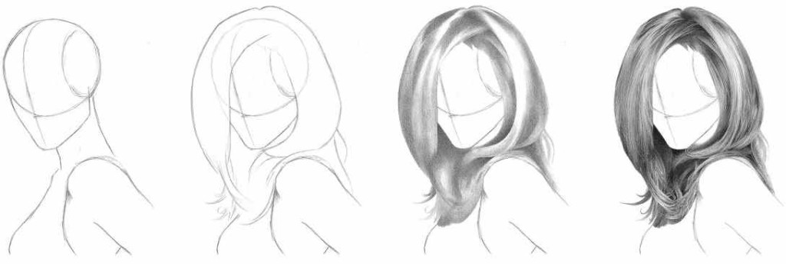
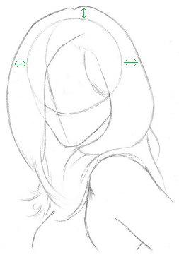
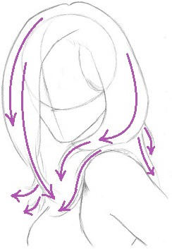
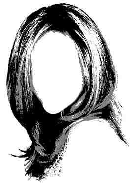
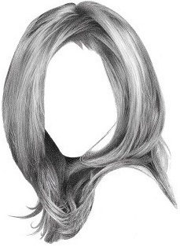
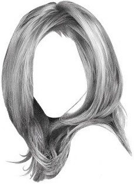
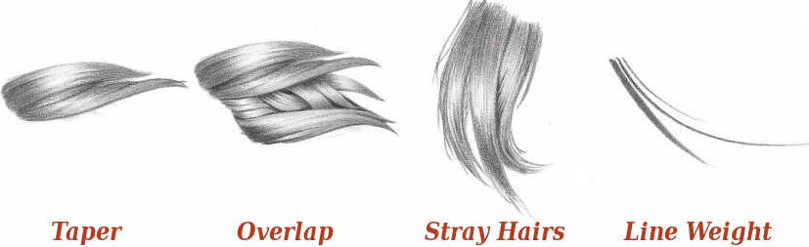

Cómo dibujar cabello realista

En este tutorial, aprenderás a dibujar cabello realista paso a paso. El cabello puede ser un desafío, pero con las técnicas adecuadas, puedes crear mechones que parecen tener vida propia.
Volumen,Flujo,Valor y Textura
1.Volumen
Es útil trazar contornos sueltos del cráneo antes de empezar a dibujar el cabello. Si dibujas el cabello sin tener en cuenta la forma tridimensional de la cabeza humana, le faltará volumen y corres el riesgo de cortar una parte del cráneo. El cabello se ajusta a la cabeza, pero no está pegado a ella. Para la mayoría de las personas con cabello largo, se puede esperar al menos 2 centímetros de "altura del cabello" además de su altura real, y también al menos 2 centímetros a los lados.
2. Flujo
Para dibujar un cabello fluido, es necesario tener en cuenta la estructura subyacente. En peinados largos, en reposo, el cabello fluye hacia abajo, abraza la cabeza y envuelve los hombros. Es como un líquido. Comienza dibujando la estructura básica del cabello y mantén trazos sueltos y simples.
3. Valor
Una cabellera contiene muchos tonos, así que antes de empezar a dibujar, tómate un tiempo para determinar de dónde proviene la fuente de luz y cómo afectará el valor tonal del cabello. Si trabajas con una imagen de referencia donde la iluminación es demasiado tenue, posteriza la imagen o aumenta el contraste con un programa de edición de imágenes gratuito como GIMP para exagerar los tres tonos diferentes y facilitar su identificación.
Una vez que tengas la iluminación definida, empieza a dibujar líneas divisorias entre los grupos de cabello que parecen superponerse. Decide dónde quieres que incida la luz y luego delinea esas áreas usando la técnica de delineado de sombras . Sombrea las luces. Si sueles perderte en los detalles, este paso te ayudará a controlar la iluminación general para que puedas dibujar cada cabello con más confianza.

4. Textura
Una vez que tengas la iluminación definida, empieza a dibujar líneas divisorias entre los grupos de cabello que parecen superponerse. Decide dónde quieres que incida la luz y luego delinea esas áreas usando la técnica de delineado de sombras . Sombrea las luces. Si sueles perderte en los detalles, este paso te ayudará a controlar la iluminación general para que puedas dibujar cada cabello con más confianza.
 

Técnicas útiles
Dibujar cabello no se trata solo de un montón de líneas en patrones repetitivos y aburridos. Usa las 4 técnicas a continuación para que tus dibujos sean más atractivos.
Si tienes dificultades para dibujar cabello largo porque tus trazos de lápiz son demasiado cortos o entrecortados, intenta sostener el lápiz más lejos de la punta. Esto te dará mayor amplitud de movimiento y producirá trazos más largos y suaves.